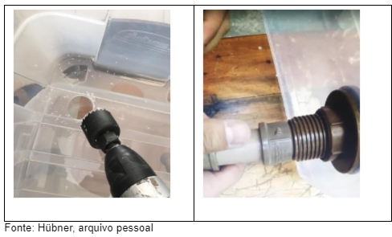
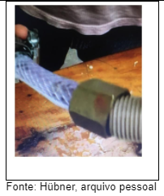
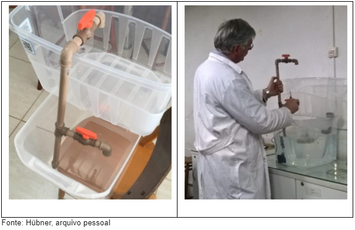
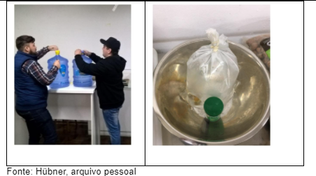
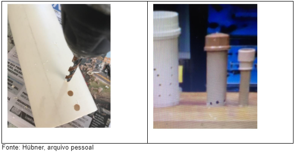
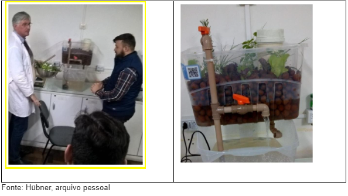

A aquaponia é uma técnica realizada para que de forma sustentável possa ser integrado a aquicultura convencional (criação de organismos aquáticos tais como peixes, lagostas e camarões) associada à hidroponia (cultivo de plantas em água), ocorrendo uma verdadeira simbiose entre as espécies.
• 1 Caixa Plástica 36 Lt;
• 1 caixa plástica 18 Lt;
• 1 metro de cano de 20mm;
• 50cm de cano de 50mm;
• 50cm de cano de 100mm;
• 1 flange de 20mm;
• 5 conexões do tipo joelho para 20 mm;
• 1 conexão T para 20 mm;
• 2 registros para tubo 20 mm;
• 1 luva redução de 25 mm para 20 mm;
• 1 adaptador bolsa rosca 20 mm;
• 1 conexão para gás bico mangueira 3/8;
• 10 cm de mangueira plástica;
• 2 abraçadeira para mangueira de gás;
• 1 bomba submersa para aquário vazão 1000 Lt/hora 110 volts;
1. Na caixa plástica menor, faz-se um furo utilizando a serra copo, de tal forma que se encaixe a flange de 20 mm.
2. Faz-se a adaptação do tubo com a bomba submersa. Encaixe da mangueira na bomba submersa e no adaptador com rosca para encaixe de tubo de 20 mm.
3. Instala-se as demais conexões como na figura 6 abaixo. Encaixe das conexões e registros para tubo de 20 mm.
4. Enche-se a caixa inferior e maior com água (para este sistema, utilizou-se 25 Lt de água mineral), cujo ph alcalino foi corrigido com corretor ACIDI. E depois, acondiciona-se o saco contendo os peixes para que, estes, possam se aclimatizar a nova temperatura.
5. Em seguida monta-se o sistema de sifão que será acondicionado sobre a flange na parte interna da caixa superior. O sistema de sifão consiste no cano de 100 mm com quepe que terá a uns 15 cm da sua base furada, para permitir a entrada de água. Este cano serve como sistema de inspeção. Outro cano de 50 mm com quepe, terá a borda inferior furada. E, finalmente um pedaço de cano de 20 mm com a luva de redução de 25 mm para 20 mm. As medidas utilizadas neste sistema foram: 30 cm do cano de 100 mm; 20 cm do cano de 50 mm; 10 cm do cano de 20 mm. O encaixe é feito conectando-se o cano de 20 mm com a luva de redução sobre a flange, cobrindo-o com o cano de 50 mm e em seguida, fechando o sistema com o cano de 100 mm.
6. Introduz-se a argila expandida, e acondiciona-se as plantas. Para um melhor desenvolvimento, sugere-se plantar os vegetais de porte maior no fundo (figura 9). Neste sistema, o alecrim e o manjericão. A frente destes plantou-se os outros vegetais citados (salsa, alface e cebolinha)... Solta-se os peixes e liga-se o sistema.
